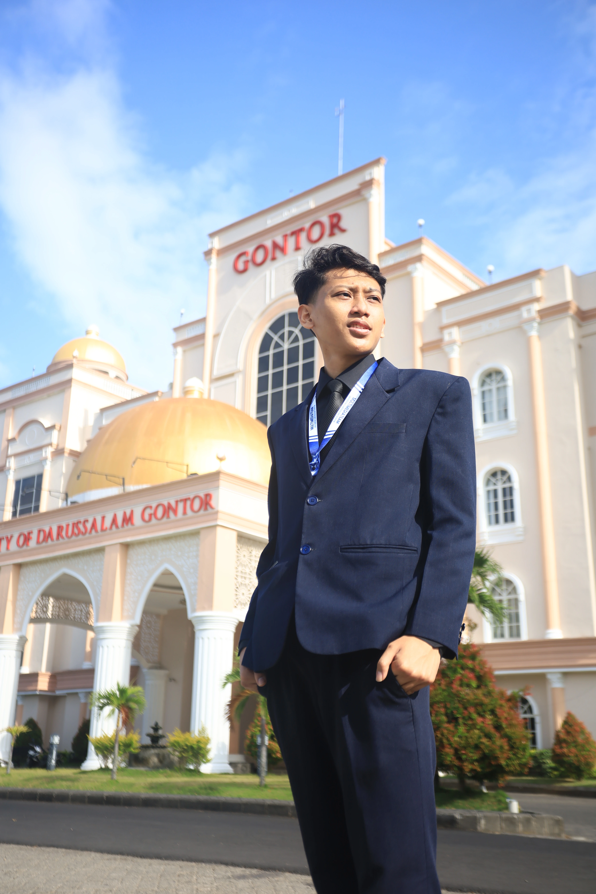

Riset
Pengelolaan Berita Online Jawa Pos Radar Lawu
Penelitian strategi pengelolaan berita online di Radar Madiun dengan kerangka POAC.
Portofolio mahasiswa Ilmu Komunikasi
Mahasiswa Universitas Darussalam Gontor yang berpengalaman sebagai desainer, di bidang publikasi dan dokumentasi kegiatan, serta kesekretariatan organisasi. 33 kegiatan sejak 2023.

Peran yang saya jalani
Surat-menyurat, notulensi, pengarsipan, dan administrasi program kerja di organisasi, panitia, dan gugus depan.
Poster, feed dan story media sosial, banner, serta sertifikat untuk acara kampus dari Muharram Cup sampai Wisuda.
4 kali VJ LED, 3 kali live switching, dan memimpin tim Multimedia UNIDA Gontor.
Sorotan
Penelitian strategi pengelolaan berita online di Radar Madiun dengan kerangka POAC.
Materi teori dan storyboard video penjelasan dengan karakter 3D chibi.
Esai Jurnalistik Kontemporer untuk pertanyaan “Apa Peran Jurnalis di Era Digital?”.
Kirim pesan untuk kolaborasi produksi, siaran kegiatan, atau diskusi seputar media.